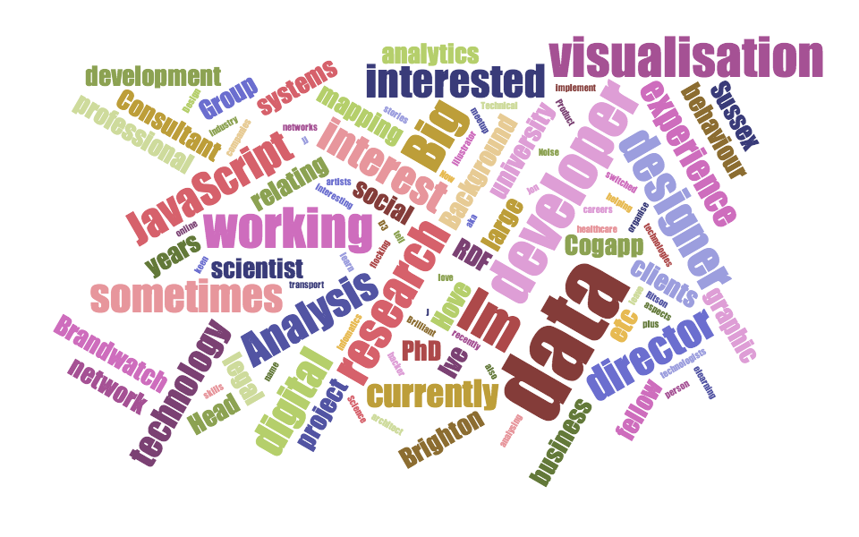

Data Visualisation Brighton
1st Meetup
Introductions...
Your organiser
Peter Cook
animateddata.co.uk
@animateddata
What is data visualisation?

William Playfair (1805)
www.xcellextech.com/Blog/2010/06/designing-interactive-excel-2007-charts/

www.nytimes.com/interactive/2013/05/25/sunday-review/corporate-taxes.html
stefanieposavec.co.uk
www.fastcodesign.com/1669468/how-gm-is-saving-cash-using-legos-as-a-data-viz-tool
What is data visualisation for?
Informing
Analysis
Exploration
Story telling
Wonder
etc.
Why visualise?
Spreadsheet from tennis-data.co.uk
Single table, each row represents a single match

Each match consists of: round, winner, loser, ATP points, games won in each set etc.

From 1877
What is data?
What media can we use?
Digital
Paper
3d-printing
Lego
Food
Sound?

blog.visual.ly/the-making-of-fat-or-fiction-infotography/
www.fastcodesign.com/1669468/how-gm-is-saving-cash-using-legos-as-a-data-viz-tool
Science...

Source: Information Dashboard Design, by Stephen Few
...or art?

www.georgeandjonathan.com
Data Visualisation Brighton
Talks
Workshops (tools & techniques)
Hacknights
Discussion
Show and tells
Thank you for joining!
4th Tuesday of every month
Next meetup: 24th June 7.30pm
@datavisbrighton